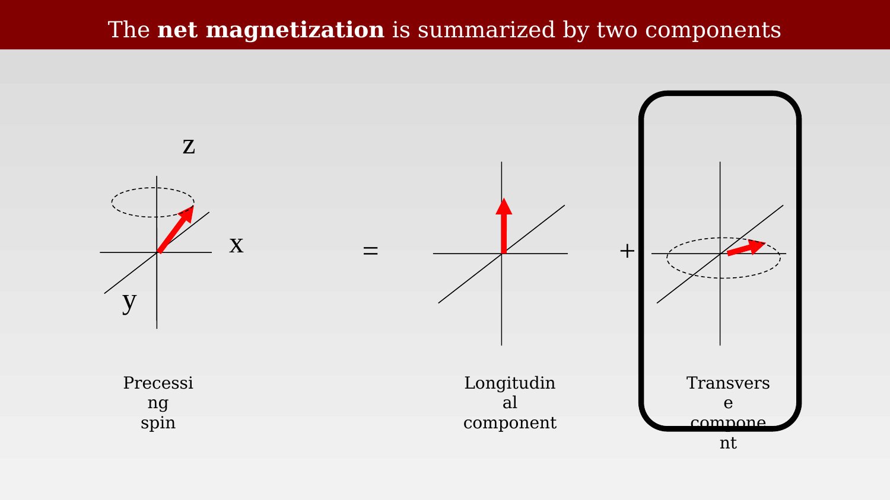
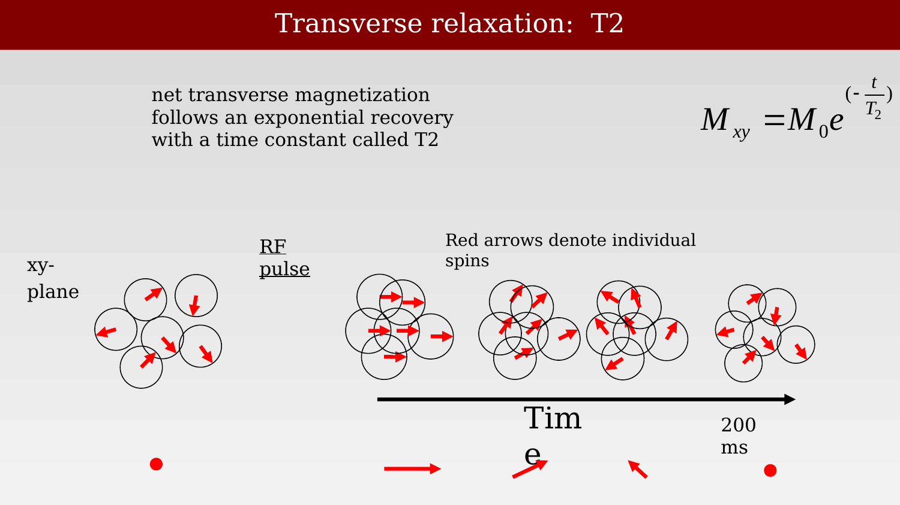
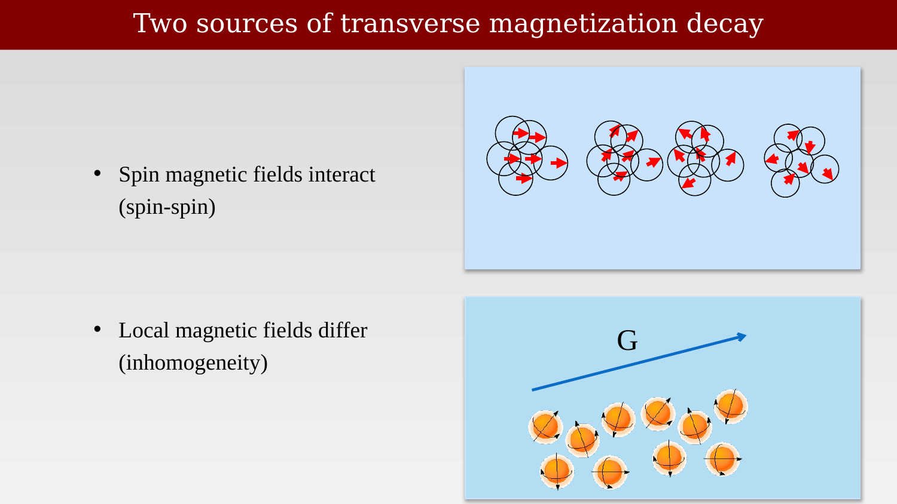
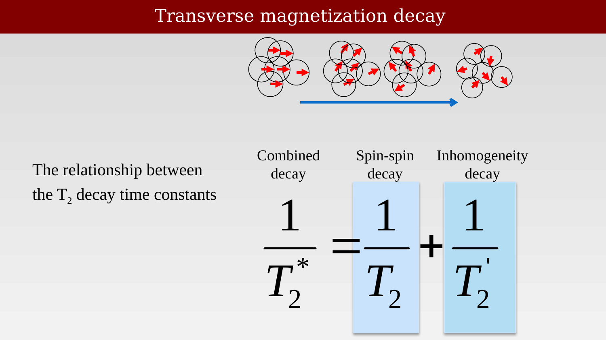
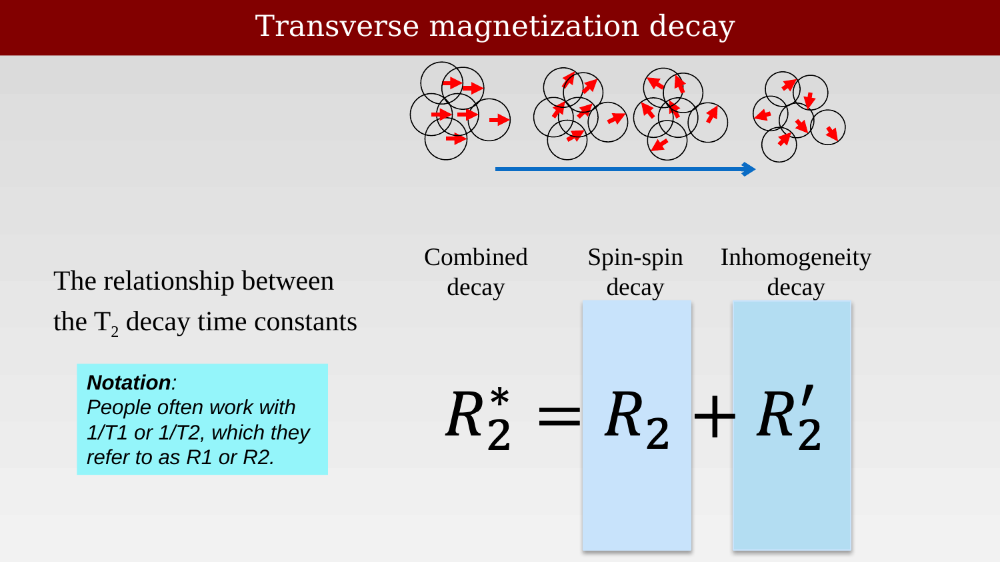
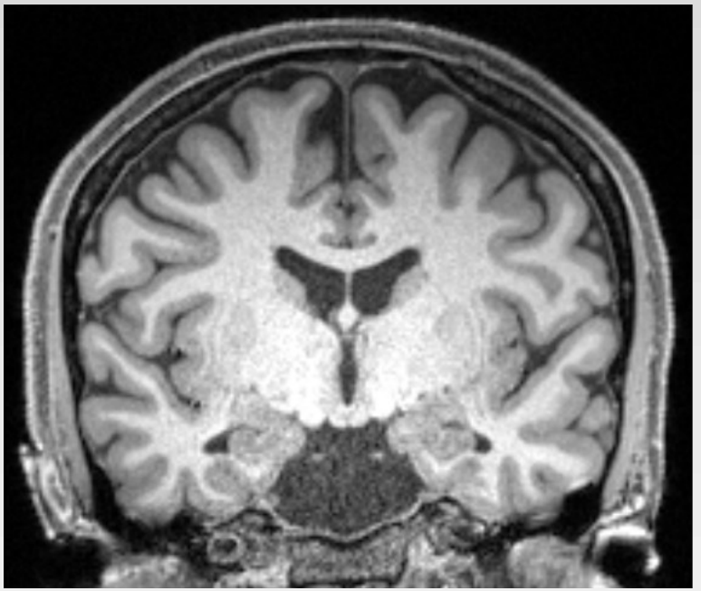
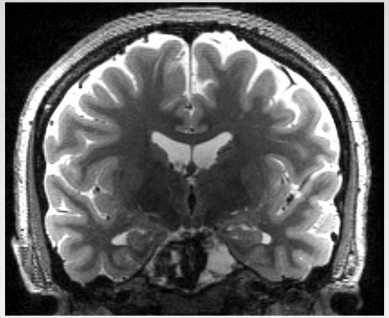
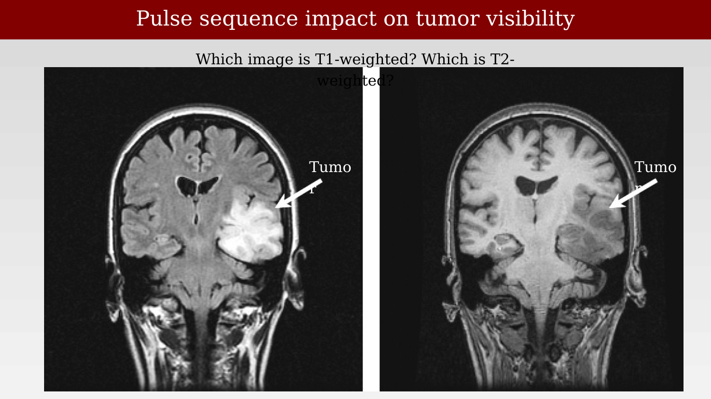

8 T2 Relaxation and Signal Contrast
Suggestions of all kinds for these lecture notes are welcome — whether it’s fixing small errors, raising bigger questions, or offering new perspectives. Please share comments through GitHub Issues. To make feedback easier to address, please point to the section you have in mind — by section number or a short snippet of text.
The second fundamental measurement, T2, is arises from a very different mechanism from T1. This chapter explains the T2 relaxation.
(For a mathematical description of the relaxation equations for both T1 and T2, as well as a short biographical note, see the resource Felix Bloch and the Bloch Equations.)
8.1 The net magnetization is summarized by two components

As in Figure 7.1, we separate the net magnetization into a component along the z-axis (longitudinal) and a component in the x-y plane (transverse). T1 describes how the longitudinal component returns to equilibrium after an RF pulse. T2, which is boxed in this slide, describes how the transverse component returns to equilibirum.
Like the longitudinal component, we describe the transverse component as a vector. But this vector is dynamically rotating in a plane. Thus, it has both a changing length (amplitude) and a changing direction. Remember from the prior chapters, this rotating vector is the only signal we measure in an MR experiment.
A receive coil sits at one position and senses only the projection of that vector onto its own axis (Figure 6.8). As the transverse magnetization precesses around the z-axis, the projection points first toward the coil (positive) and then away from it (negative). The measured signal oscillates at the Larmor frequency as the vector rotates. The amplitude of that oscillation decays over time. The time constant of the day of the transverse vector is T2.
8.2 Transverse relaxation: T2

Before the RF pulse, the spins have no common transverse direction. This is true in field-free space, and it remains true after we place a head in the B0 field: B0 creates a preferred direction along z, but it creates no preferred direction in the x-y plane. The individual transverse components point every which way and cancel, so there is no net transverse magnetization and the coil measures nothing.
The RF pulse changes this. It tips the spins away from the z-axis and, just as important, it leaves them precessing together — in phase. Now the individual transverse components add rather than cancel, and we do measure a signal from the coherent transverse magnetization.
The sequence of events is summarized in Figure 8.2. The red arrow below the vectors of spins shows the net transverse magnetization over time. It starts out as a dot (zero length, no direction). After RF excitation the net is large and precessing around the z-axis. Then, as the individual spins lose their common phase — becoming incoherent — the net transverse magnetization shrinks back to zero, here over a couple of hundred milliseconds. The decay is exponential,
\[ M_{xy}(t) = M_0\,e^{-t/T_2} \]
and T2 is its time constant.
8.3 The spin de-phasing
When the spins share a common phase, we say they are in phase, or coherent. The loss of that common phase is called de-phasing.
The video represents the de-phasing, but in a special way. Remember that the transverse magnetization is always precessing around the z-axis, far too quickly to display. So we imagine ourselves rotating around the z-axis at that same pace — the rotating frame. If we do not rotate around at the precession frequency, we say we are in the lab frame. In the rotating frame the common precession becomes invisible, and what remains visible is exactly what we care about: the individual moments fanning out relative to one another.
- Transverse magnetization declines as the directions of the spins (their relative phases) diverge, becoming incoherent
- The colored vectors on the left represent the individual magnetic moments (spins); they begin aligned and progressively spread apart
- The blue arrow on the right is the sum of those moments — the net transverse magnetization — which shortens as the spins de-phase
- The curve at the bottom shows how the amplitude of that sum decays over time
But do remember what this amplitude means. The signal in the coil swings back and forth, from positive to negative, as the transverse magnetization goes round and round the z-axis. The decaying curve is the envelope of that oscillation, not the oscillation itself. This decaying oscillation, measured after a single RF excitation, is the free induction decay (FID) introduced in @?fig-ch05-panel-fid.
8.4 The two mechanisms of spin de-phasing

Why do the spins lose their coherence? Glad you asked. There are two main reasons, and the distinction between them matters (Figure 8.3).
Spin-spin interactions (pure T2). Each proton is itself a tiny magnet, so every spin precesses in a field that is slightly perturbed by its neighbors. Because the molecules are tumbling, those perturbations fluctuate rapidly and randomly. Each spin’s precession rate wanders a little, the phase differences that accumulate are random, and coherence is lost for good. This contribution is irreversible: no later pulse can undo it.
Local field inhomogeneity (T2’). The static field is never perfectly uniform. Imperfections in the magnet, and — more important for the head — differences in magnetic susceptibility near the sinuses, the ear canals, and blood vessels, mean that spins at different positions sit in slightly different values of B0. They precess at slightly different but constant rates, and so they fan out steadily. This contribution is reversible, which is the trick behind the spin echo (?fig-ch09-pulse-sequences-spin-echo-hahn).
8.5 T2, T2’ and T2*


The two mechanisms act at the same time, and it is their rates that add, not their time constants. The combined effect is called T2*,
\[ \frac{1}{T_2^{*}} = \frac{1}{T_2} + \frac{1}{T_2'} \]
Because rates add, T2* is always shorter than T2. The FID we actually measure therefore decays faster than the pure spin-spin relaxation would predict — which is why an FID by itself does not measure T2.
People don’t like all that one over stuff, so they use R1 to refer to 1 over T1, and R2 to refer to 1 over T2. In that notation the relationship is just \(R_2^{*} = R_2 + R_2'\). The equation looks simpler. It’s not.
8.6 Comparing T1 and T2 images
It is very unusual for investigators to acquire a pure T1 or a pure T2 image. Usually the image reflects relatively more of one than the other, and so we call it T1-weighted or T2-weighted. The timing of the pulse sequence is what sets the balance, and that is the subject of the next chapter.
8.6.1 T1-weighted images: gray is darker than white

In a T1-weighted image, the signal is larger where T1 is shorter: tissue with a short T1 has recovered more of its longitudinal magnetization by the time we read the signal out. White matter has the shorter T1 (0.65 s, versus 0.88 s for gray matter at 1.5 T; Figure 7.11), so white matter is bright and gray matter is dark. CSF has the longest T1 of the three and is darkest of all — look at the ventricles in the coronal image. This is the contrast that makes T1-weighted volumes the standard anatomical image for separating gray from white matter.
The image in Figure 8.6 is from UCSD.
8.6.2 T2-weighted images: white is darker than gray

T2-weighted images reverse this relationship. Now the signal is larger where T2 is longer, because tissue whose transverse magnetization decays slowly still has signal left when we measure it. At 3 T the average T2 is about 108 ms for gray matter and 78 ms for white matter, so gray matter is now the brighter of the two. CSF, with a T2 of roughly two seconds, is brighter still.
Figure 8.6 and Figure 8.7 are coronal images of the same subject, acquired in the same session. Comparing them is the quickest way to see the point of this chapter: the anatomy is the same and the contrast is inverted, because the two acquisitions are sensitive to different physical mechanisms.
Images from this UCSD site.
8.7 Summary of the relative signal intensities using T1 and T2
Key:
- Bright/White: High signal
- Light Gray: Moderate signal
- Dark Gray: Low signal
- Black: Signal void
| Tissue / Structure | T1-Weighted Appearance | T2-Weighted Appearance | Physical Basis |
|---|---|---|---|
| Fat | Bright (White) | Intermediate | Short T1 (~180 ms), Moderate T2 |
| White Matter | Light Gray | Dark Gray | T1: 650 ms @ 1.5T, T2: 78 ms @ 3T |
| Gray Matter | Dark Gray | Light Gray | T1: 880 ms @ 1.5T, T2: 108 ms @ 3T |
| CSF/Free Water | Black | Bright (White) | Long T1 (>2000 ms), Long T2 (~2000 ms) |
| Bone/Air | Black (Signal Void) | Black (Signal Void) | No mobile protons |
Reference values from Wansapura et al. (1999) and Konar et al. (2022)
The table collects the appearance of the main tissue types in the two weightings. The row to watch is the gray/white pair: light gray and dark gray on T1, and the reverse on T2. Notice also that bone and air are dark in both. Their darkness has nothing to do with relaxation — they contain almost no mobile hydrogen, so there is very little magnetization to measure in the first place. That is a proton density (PD) effect, the third of the three basic contrasts.
8.8 T2-weighted images measure pathologies involving fluid filled regions
Free water has a much longer T2 than either gray or white matter (?fig-ch08-t2-time-course-and-t2-contrast). Many pathologies — edema, inflammation, cysts, tumors, vascular malformations — raise the local water content, so they stand out as conspicuously bright regions on a T2-weighted image. The arrow in the lower right panel marks an arteriovenous malformation (AVM).
Two cautions about the tissue values quoted here. First, the T2 of gray and white matter varies across the brain, so the averages are only a guide. Second, and more fundamental: a T2-weighted signal level is not itself a measurement of T2, because the signal also depends on proton density and on coil sensitivity. Turning the weighted image into a quantitative T2 map requires more than one measurement, which is the topic of the next chapter.
Reference values for normal tissue at 3 T are from Wansapura et al., NMR relaxation times in the human brain at 3.0 Tesla, J. Magn. Reson. Imaging 9:531-538 (1999), and from Konar et al., Quantitative relaxometry metrics for brain metastases compared to normal tissues, Cancers 14:5606 (2022), the source cited on the slide.
8.9 Pulse sequence impact on tumor visibility

The same tumor in the same slice can be brighter or darker than the surrounding brain, depending only on the pulse sequence used to acquire the image. Nothing about the tissue changed between the two panels; what changed is which relaxation mechanism the measurement was made sensitive to. Choosing that weighting deliberately, rather than accidentally, is what the next chapter is about.